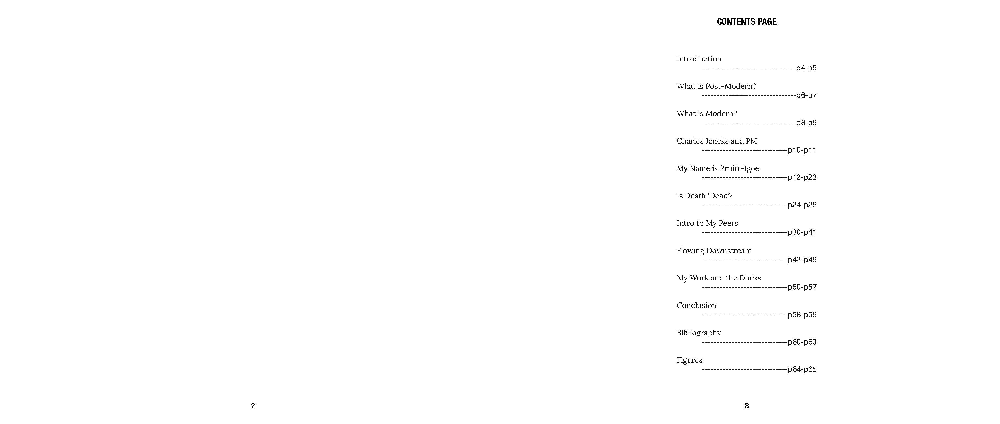
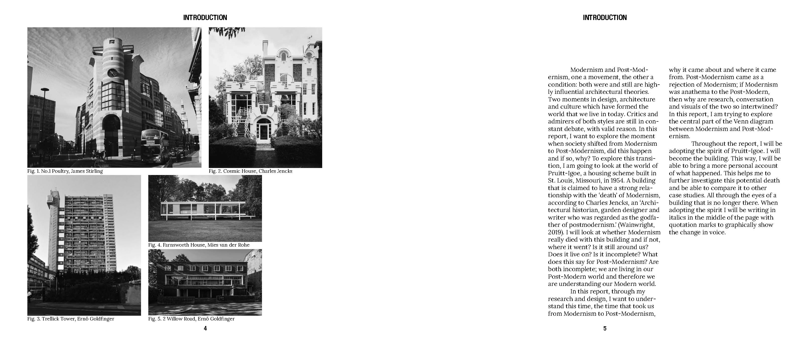

Modernism Didn’t Die is a context report that houses the research and proof for my project Modernism: Living and Breathing in South London. An essay that spends 8000 words disagreeing with the statement that Modernism is dead but not only disagreeing but also providing proof. In Charles Jencks book ‘The Language of Post-Modern Architecture’ he labels Modernism as dead and I used this report to show my findings and disagreements with the statement.


2025